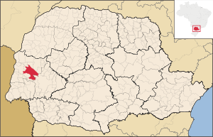
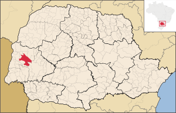

História
Fundada por colonizadores gaúchos que desembarcaram do primeiro caminhão de desbravadores e começaram a construção das primeiras casas em 27 de março de 1946, no então Território Federal do Iguaçu, Toledo inicialmente era um projeto de colonização de rápido crescimento no interior de Foz do Iguaçu.
Subdivisões de Toledo
Toledo possui 22 bairros e 10 distritos (contando a sede).
| Posição | Bairro | População | Densidade |
|---|---|---|---|
| 1 | Centro | 11695 | 3039.39 |
| 2 | Jardim Santa Maria | 2555 | 3039.39 |
| 3 | Jardim La Salle | 2311 | 1992.74 |
| 4 | Jardim Pancera | 3227 | 1565.23 |
| 5 | Jardim Parizotto | 943 | 1950.86 |
| 6 | Jardim Bressan | 3105 | 3430.72 |
| 7 | Sadia | 0 | 0 |
| 8 | Vila Pioneiro | 17340 | 5116.56 |
| 9 | Pinheirinho | 550 | 191.52 |
| 10 | Jardim Europa/América | 11704 | 3438.48 |
| 11 | Vila Operária | 2550 | 3373.33 |
| 12 | Jardim Concórdia | 4381 | 1594.1 |
| 13 | Jardim Independência | 459 | 1192.92 |
| 14 | Jardim Porto Alegre | 4987 | 1510.77 |
| 15 | Jardim Gisela | 6588 | 2599.79 |
| 16 | Vila Industrial | 6392 | 1250.47 |
| 17 | Tocantins | 1163 | 389.68 |
| 18 | Jardim Coopagro | 8447 | 2265.89 |
| 19 | Vila Becker | 1108 | 1052.06 |
| 20 | Cerâmica Prata | 32 | 123.94 |
| 21 | São Francisco | 5665 | 2700.28 |
| 22 | Jardim Panorama | 7974 | 4207.71 |
| Posição | Bairro | População | Densidade |
|---|---|---|---|
| 1 | Bom Princípio do Oeste | ||
| 2 | Concórdia do Oeste | 1022 | 25.27 |
| 3 | Dez de Maio | 1619 | 15.95 |
| 4 | Dois Irmãos | 763 | 17.37 |
| 5 | Novo Sarandi | 2932 | 30.89 |
| 6 | Novo Sobradinho | 887 | 22.51 |
| 7 | São Luiz do Oeste | 742 | 15.1 |
| 8 | São Miguel | 467 | 10.6 |
| 9 | Vila Ipiranga | 544 | 18.17 |
| 10 | Vila Nova | 2188 | 28.2 |
Hidrografia
Principais rios, sangas e arroio que cortam Toledo são:
- Rio Toledo;
- Rio São Francisco;
- Sanga Panambi;
- Arroio Marreco.
Clima
O clima de Toledo é temperado, com chuvas bem distribuidas ao longo do ano e com verões quentes, clima subtropical úmido segundo a classificação de Köppen-Geiger, onde observam-se a temperatura média do mês mais quente superior 22 °C, a temperatura média do mês mais frio inferior a 18 °C e a ausência de uma estação seca definida. O mês mais quente é Janeiro, com uma temperatura média de 24,4 °C e o mais frio é Junho, com uma temperatura média de 15,7 °C, no entanto a amplitude térmica provocada pela presença de massas de ar polares ou continentais é capaz de gerar ao longo dos anos registros de valores extremas.
Aspectos econômicos
Toledo apresenta uma economia baseada principalmente no agronegócio e está em primeiro lugar, entre os municípios do estado, no Valor Bruto da Produção Agropecuária, como também no PIB Agropecuário no Paraná. É um grande produtor de soja, milho, suínos e frango, gado leiteiro e de corte. Sofre um processo de industrialização, principalmente nos setores ligados ao setor agrícola e pecuário.
Pontos de Destaque
- Aquário Municipal Dr. Rômolo Martinelli;
- Catedral Cristo Rei;
- Igreja Evangélica de Confissão Luterana no Brasil (Igreja do Sono);
- Jardim Zoobotânico de Toledo - Parque das Aves (Horto municipal);
- Museu Histórico Willy Barth;
- Parque do povo - Luiz Cláudio Hoffmann;
- Parque dos Pioneiros;
- Parque linear sanga Panambi;
- Parque Temático das Águas;
- Praça Willy Barth;
- Rua 7 de Setembro
- Saltos São Francisco Falso;
- Teatro Municipal de Toledo.